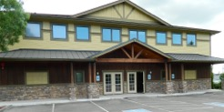

General Contact Info
Calvary Chapel Marysville
1224B Cedar Ave.
Marysville, WA. 98270
Church Phone: 206-383-7787
Quick Ministry Contacts
Joel Belcher - Pastor
John Watson - Elder/ Deacon BoardPat Finley - Deacon Board
Jeff Ostreim - Deacon Board
Chris Sheridan - Deacon Board
Thor Allestad - Children's Ministry
Samantha Belcher - Women's Ministry
Chris Sheridan - High School Ministry (Core)
Matt & Michelle Brister - Middle School Ministry (Relentless)
Jeff and Lisa Ostreim - Community Outreach
Michelle Brister - Office Administrator
Directions / Where we are located
From I-5 northbound or southbound, take Exit #199, 4th Street exit. Head east on 4th street. Take the next left (north) on Cedar Ave. Drive approximately 3/4 of a mile on Cedar Ave. Go straight through the stop sign and turn into our parking lot immediately after the Park and Ride. We are located one block west of State Street right next to the Park & Ride on the corner of Cedar Avenue and Grove Street. You are also welcome to park in the Park & Ride.
Calvary Chapel Marysville
1224 B Cedar Ave, Marysville, WA. 98270
